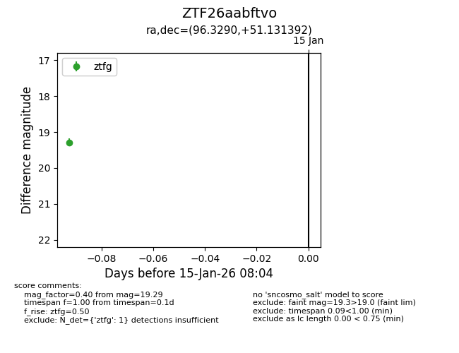
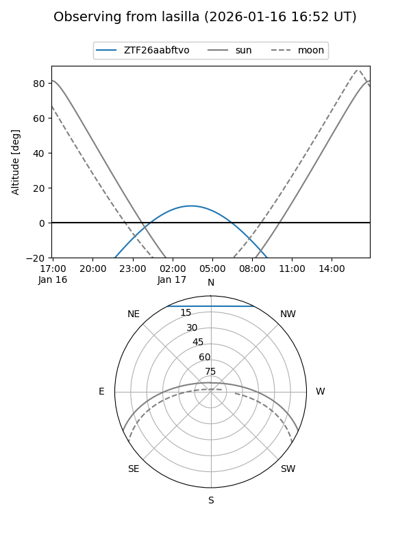
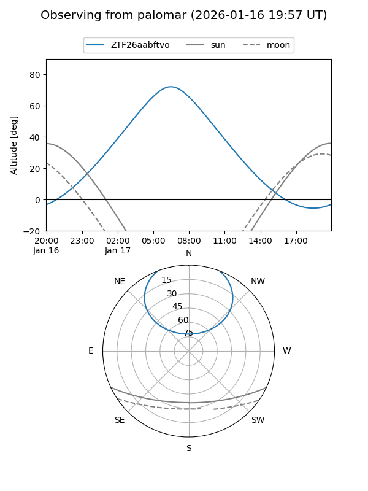

ZTF26aabftvo
Target ZTF26aabftvo at 2026-01-15 08:05
Aliases and brokers:
FINK: link
Lasair: link
ALeRCE: link
alt names
ZTF26aabftvo (ztf,fink_ztf)
Coordinates:
equatorial (ra, dec) = 96.3290,+51.13139
equatorial (HMS+DMS) = 06:25:18.96,+51:07:53.01
galactic (l, b) = (163.6072,+16.94801)
Flags:
Photometry:
last ztfg=19.29
1 ztfg detections
Lightcurve

Visibility


Additional plots